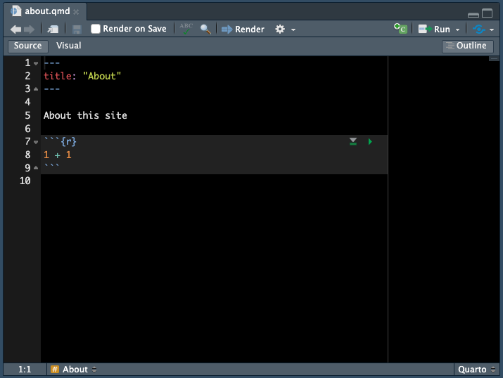

install.packages("rmarkdown")Quarto website 1: Initiating a website üåê
website
1 Introduction
We are going to begin this semester’s Code Club with a series on making yourself a website. There are lots of reasons why you might want a website, including to:
- have a web presence about yourself (so when people google you, they can find your relevant info)
- have a blog where you post about whatever it is you want to post about
- share your research or data
Some of you may already have a simple free or paid website for yourself, that you made through www.u.osu.edu, Squarespace, or Google Sites. These tools don’t require you to be able to code, and allow you to create a website with different levels of customization and interactivity.
For the next few sessions, we are going to go over making a website using Quarto. Quarto can be used as an open-source publishing system and you can integrate content from Jupyter notebooks, plain text markdown, Python, R, Julia and others. We are going to use Quarto integrated with R.
Take a look at a gallery of Quarto website examples.
We picked this particular platform to go over in Code Club since its lightweight, customizable, free, and integrates with R which you’re probably learning anyway. I am going to start going through an example that will be my personal website. I picked this example because I thought this might be of interest to most of you.
2 Installation
To render your website in RStudio, you will need to have the rmarkdown R package installed. You can do so by typing (or copying) the following into your R Console inside RStudio:
While not necessary for basic website building inside RStudio, it will also be a good idea to have Quarto installed moving forward. This is not an R package, but is a separate piece of software. To install it, go to https://quarto.org/docs/get-started/ and the correct installer for your operating system should be highlighted in a blue box. Click on that box to download and once downloaded, click on the installer to install Quarto.
3 Initiating your website project
The first step to getting a website is to open up a new project in RStudio.
Start by going to File > New Project > New Directory. When asked which Project Type you want, pick Quarto Website. Note that you can also initiate a Quarto Blog which is a type of Quarto Website - since the website template is simpler we are going to start there, and can change back in the future if you want. If you want to read ahead, here is a nice website about making your Quarto website into a blog.
You will then be asked where you want this website to live in your computer. Under Directory Name pick the name of the folder you want your content to be in, and Create project as subdirectory of as where you want the location on your computer. I have used the Knitr engine for website building.

I am not creating a git repository (since we haven’t gone over that yet, we will add it later after we finish our site), am not using renv with this project (which automatically saves your environment), and I am not default using the visual editor (which let’s you look at your markdown files how they will look when executed) since I want you to get used to looking at markdown. You can always toggle the visual editor later.
Once you do this basically you have all the bones of a website! Congratulations ü•≥
4 Orienting to your website
A new RStudio window should have opened (since we checked the box in the previous step Open in new session) that has your new R project opened.
We now see the four quadrants of RStudio:
- the top left where the two website files
index.qmdand_quarto.ymlare open - the bottom left where we see the console
- the top right where we see the tabs: Environment (which is currently empty), History (which we won’t use), Connections (which we won’t use), Tutorial (which we won’t use), and a new one Build (which is how we render our site)
- the bottom right where we see Files (which houses the new files that populate our website), Plots (which you’ve seen before and where plots can be rendered if you don’t like them inline), Packages (which shows all the packages loaded in your R), Help (which you’ve seen before, and where you can get help), Viewer (a new one where we can see a preview rendering of our website), and Presentation (where we can see a preview rendering a presentation but we aren’t doing that right now).
5 Building your site
Let’s see what our website looks like before we’ve done anything. If you go to the Build tab in the top right quadrant and click Render Website your site will render and show up in the Viewer in the bottom right.
6 Looking around
You can now click around in your new and very unexciting website. Let’s look around and then we will go through the file structure to see how the two are related.
Along the top, or if you click the three lines in the top right (depending on the size of your browser page) you can see by default we get a Home and About page. If we click ‘website’ at the top, we go back to Home. We also have a search bar that allows us to search on our site.
Now that we know what information we see on our site, we can look at the files that are used to build the site and try and interpret them.
Before we open the files, let’s talk about the file extensions and what they mean:
.ymlis a YAML or the file that indicates how the website will be configured.qmdis a Quarto markdown document, and if you’re familiar with RMarkdown.Rmddocuments its very similar. It contains both text written in markdown and executable code..cssis a Cascading Style Sheets file that indicates the way to style an HTML document (i.e., your website).Rprojis a R Project file that designates your working directory
We also have a folder _site which houses the knitted website files. More about this later.
7 index.qmd
This index.qmd file indicates what the home page of the site will look like.
Intuitively we can compare this file to what the homepage of the website looks like. You can try editing this website, saving, and then click Render and see how this changes what the site looks like in the Viewer (bottom right quadrant). You can check Render on Save so that whenever you save, the file automatically renders.
Play around with adding text, code, headers, images, whatever you might want on your website homepage.
8 about.qmd
This about.qmd file indicates what the about page of the site will look like.

Just like with the index.qmd file, you can play around with this page.
9 _quarto.yml
The YAML file indicates how the site should be configured.
You’re probably not familiar with these .yml files but still its not horribly difficult to figure out what the different bits do.
At the top, project type is indicated as website. We don’t want to change that now.
In the next section beginning at line 4, we can have some specific information for how the website populates. The title is listed as “website” - we can change that to what we want at the top of our website. There is also a specification for what are the items in your navitation bar - here we have that the Home text will link to the index.qmd, and the next link is about.qmd. You can make more .qmd files that have other information and refer to them here and they will also populate in your navigation bar.
In the third section at line 12, we can see some information on the setting of the website format. We have a html site, the theme is something called “cosmo” (see here for some other options), we are using the styles.css file for css theming (actually that file is currently blank but thats ok), and we are indicating toc (or table of contents) as true, therefore we have a table of contents.
Here you can find some documentation about all the different stuff you can put in your YAML for a website.
10 Playing around
Now that we have a general understanding of whats in our site, try playing around to begin customization to be how you want. We will do this for the rest of the session and please ask any questions on problems you come across, or share cool things you find!